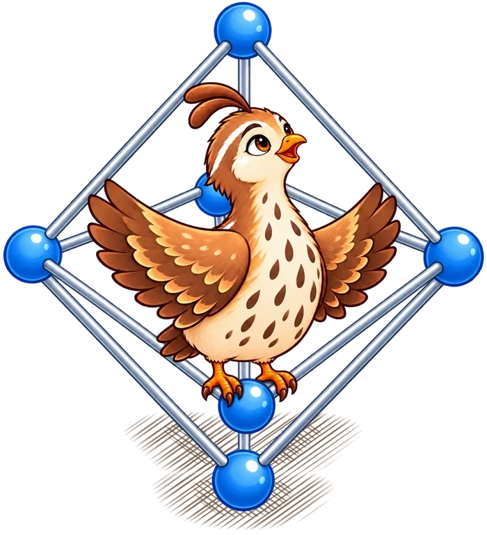

Кристаллическое поле и поле лигандов
В комплексе пять d-орбиталей металла перестают быть вырожденными: орбитали, направленные на лиганды, поднимаются выше, остальные — ниже. Как именно расщепляются уровни, определяет симметрия окружения. Энергии здесь рассчитаны в модели углового перекрывания (AOM): каждый лиганд дестабилизирует d-орбиталь на eσFσ² + eπFπ², где F — перекрывание орбитали с лигандом по σ- и π-типу. Параметры eσ и eπ — иллюстративные значения для ионов M³⁺ 3d-ряда.
Что нужно понять
- Лиганды снимают вырождение d-орбиталей металла; картину расщепления определяет симметрия окружения.
- В октаэдре eg выше t2g на Δo; Δo зависит от лиганда (спектрохимический ряд) и от металла.
- Спиновое состояние определяется конкуренцией расщепления Δ и энергии спаривания P.
- Неравномерно заселённый вырожденный уровень вызывает искажение комплекса (эффект Яна–Теллера).
Границы модели: модель углового перекрывания с иллюстративными параметрами
- Что вычисляется
- Расщепление d-уровней в разных геометриях, спиновое состояние, эффект Яна–Теллера.
- Какие приближения приняты
- d-орбитали металла и их смешивание с s-орбиталью (eds = 0,25 eσ; оно опускает dz² в плоском квадрате и линейных комплексах); параметры eσ, eπ и энергия спаривания — иллюстративные, для 3d-металлов, не подобраны к конкретному комплексу.
- Какой вывод можно сделать
- Порядок и симметрия уровней, тенденции высокого и низкого спина — да; количественные Δ — нет.
1. Расщепление d-уровней
2. Высокий или низкий спин
Для октаэдрических комплексов d⁴–d⁷ возможны две конфигурации. Высокоспиновая выгодна, когда расщепление Δo меньше энергии спаривания P, низкоспиновая — когда больше. Линии показывают энергию d-электронов обеих конфигураций в зависимости от Δo; вертикальная черта — выбранный лиганд.
3. Эффект Яна–Теллера
Если в октаэдре вырожденный уровень заселён неравномерно, искажение снимает вырождение и понижает энергию электронов — линейно по величине искажения. Упругая энергия растёт квадратично, поэтому минимум оказывается при ненулевом искажении. Сильнее всего эффект при неравномерном заселении eg: d⁹ (Cu²⁺), высокоспиновый d⁴ (Cr²⁺, Mn³⁺), низкоспиновый d⁷.
4. Симметрия: метки уровней и корреляция
Метки уровней — это неприводимые представления точечной группы, по которым преобразуются d-орбитали (столбец квадратичных функций таблицы характеров). При понижении симметрии Oh → D4h вырожденные уровни расщепляются: eg → a1g + b1g, t2g → b2g + eg.
Проверьте свои знания
Задания на исследование страницы и тренажёр. Выполните действие на странице и ответьте — ответ проверится сразу.
Чему равна ЭСКП низкоспинового [Fe(CN)₆]⁴⁻ в единицах Δo?
ЭСКП, Δₒ
Сколько неспаренных электронов у [Fe(H₂O)₆]²⁺?
Неспаренных электронов
Переключитесь на тетраэдр. Почему тетраэдрические комплексы почти всегда высокоспиновые?
Какая геометрия делает комплекс d⁸ с сильными лигандами диамагнитным?
Почему CO и CN⁻ дают самое большое расщепление?
Во что переходит уровень eg октаэдра при понижении симметрии Oh → D4h?
Проверьте себя
Для октаэдрического комплекса ниже определите число d-электронов, число неспаренных электронов и энергию стабилизации кристаллическим полем (ЭСКП) в единицах Δo, без учёта энергии спаривания. Спиновое состояние указано по эксперименту.